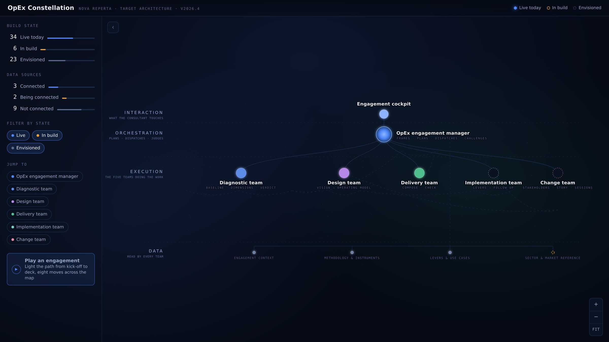

A full operational excellence engagement, delivered on an AI-enabled system
We map how the work runs today, show where the time and the money actually go,
design what it should become, and build the material your people will use. Behind every step is a
tool that already knows the method — so the work moves faster and the answers stay consistent.
Everything on this site uses invented data. Northwind Assurance is a company we made up.

The product
The dashboard you actually work in
Everything runs out of one place: what was agreed, which teams are in scope, which analyses are
done and which are still open, what each one found, and what it all adds up to. You see the same
screen we do, from the first day to the last.
One invented insurer, one claims team of 42 people, and the engagement run from start to finish:
where the paid hours really go, how the process actually runs, what the customer sees, how the team
performs, and what the people in it say themselves. Thirteen analyses that land on the same answer —
which is exactly the point.
Each stage builds on the one before it and works from the same set of facts — so two
documents can never disagree about a number.
Understand
We establish what is true today: who does what, how long it takes, and where it goes wrong.
Available now
Design
We turn the findings into a target: where you are heading, what the work should look like, and the organisation that delivers it.
Available now
Present
We build what you actually see — the read-out, the summary, the recommendation — and check the argument holds before it is sent.
Available now
Implement
We carry the chosen improvements into the organisation and follow whether they actually land.
In development
Bring people along
We make sure the people affected are with you: who needs convincing, what they hear, and when.
In development
Above all five sits a coordinator that frames the question, plans the work, hands each
analysis to the tool that owns it, and challenges what comes back before you ever see it.
The overview
Everything we can run, on one page
One page shows every analysis we can run, what each one produces, whether it is available today,
and what we need from you before we start. Nothing is buried in a folder somewhere.
A claim from first notice to closure, laid out step by step, with the measured problems sitting on
the steps where they happen and the improvements that answer them — all of it drawn from the same
set of facts as everything else.
Speed is the obvious gain. The bigger one is what the speed buys you: more of the
organisation actually looked at, more angles on every team, and a level of detail and consistency that
is simply not affordable by hand.
It moves faster
Preparing, formatting and pulling the findings together takes hours instead of weeks. The time that frees up goes back into talking to your people.
More teams, not just a sample
Coverage is normally rationed to the two or three teams a timeline allows. Here it is not, so what you get is a picture of the operation rather than a slice of it.
More angles on each team
A team is looked at from a dozen directions instead of one. When that many separate analyses arrive at the same conclusion, nobody has to take it on trust.
Deeper where it counts
Down to the individual activity with a number attached to it, rather than an impression at department level that nobody can act on.
Answers that line up
Everything works from the same set of facts and the same scoring, so two documents cannot disagree about a number, and the result does not depend on who was in the room that day.
Teams you can compare
Because every team is measured the same way, one can be held up against another — and against what we have seen in comparable operations elsewhere.
How to look around
Step 1
Open the overview and find the stage you are interested in.
Step 2
Read what that analysis produces and what it needs before it can start.
Step 3
Open the same analysis in the worked example to see the finished result.
Step 4
Tell us which ones matter for your teams, and we run them on your own work.
Nothing here is a real client. Every figure, quote and finding belongs to Northwind
Assurance, an insurer we invented for this site. Real client work is never published here.